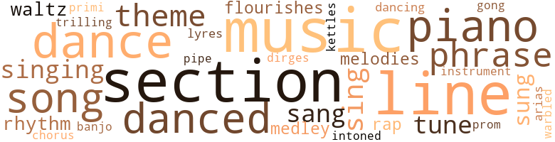
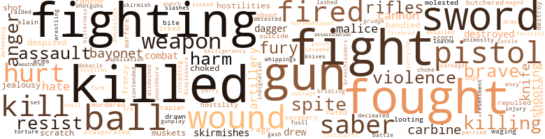
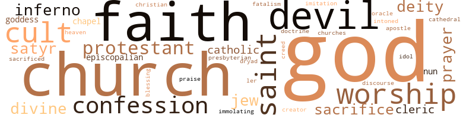

Brave Mardi Gras: A New Orleans Novel of the '60s, by Roberts, Walter A. (1946)
124 music-related terms matched in this text.
Most frequent terms in this topic: music (14); section (13); dance (8); line (8); piano (7)
aria.n.01
Definition: an elaborate song for solo voice
| word | sentence |
|---|---|
| arias | The orchestra had played only dance music and romantic arias during the intermis - sions . |
banjo.n.01
Definition: a stringed instrument of the guitar family that has long neck and circular body
| word | sentence |
|---|---|
| banjo | Claude , the brother he used to find dull , was a bom officer with a gift for making tactics interest - ing , a virtuoso on the banjo when music was in order . |
chorus.n.01
Definition: any utterance produced simultaneously by a group
| word | sentence |
|---|---|
| chorus | The chorus of jeers with which raids had been greeted until lately was not in evidence now . |
dance.n.01
Definition: an artistic form of nonverbal communication
| word | sentence |
|---|---|
| dance | They remained together an unconscionable time , going on the floor for dance after dance , in defiance of the gossips who had no clue to their identity . |
| dance | They remained together an unconscionable time , going on the floor for dance after dance , in defiance of the gossips who had no clue to their identity . |
| dance | Urgently she demanded another dance , and during the course of it she offered Blaise a ren - dezvous for the following day , setting the hour and mentioning an unfamiliar address . |
| dance | The orchestra had played only dance music and romantic arias during the intermis - sions . |
| dance | The dance had lost its savor for him and he went on home . |
| dance | On occasions they sing or dance , I forget which . |
| dance | She let that Captain Magoon dance attendance on her day and night in Shreveport , and they do say the two of them were alone together for weeks on the road from New Orleans . " |
dance.v.03
Definition: skip, leap, or move up and down or sideways
| word | sentence |
|---|---|
| danced | They danced together , and on the third turn Blaise spoke her name softly . |
| danced | He danced with a woman , seemingly young , enveloped in an Oriental costume and a full mask which it would have been impos - sible even for a close friend to penetrate . |
| dancing | There would be dancing here , at the Varieties Theatre and elsewhere , until the crack of dawn . |
| danced | By the way , you were the Roman who danced close attendance on her at the ball , were you not ? " |
| danced | You danced much with me . |
| dance | He smiled noncommittally , and as the pianist started a waltz he led her onto the floor to dance . |
| danced | The type danced before Blaise 's eyes . |
| danced | Lyn 's eyes had danced like sapphires aglow as he spoke . |
dirge.n.01
Definition: a song or hymn of mourning composed or performed as a memorial to a dead person
| word | sentence |
|---|---|
| dirges | It was unique to be in a procession of this kind without banners decked with crape , without dirges and muffled drums , Blaise mused . |
flourish.n.05
Definition: (music) a short lively tune played on brass instruments
| word | sentence |
|---|---|
| flourishes | " Kathe , the other one , flourishes . |
| flourishes | A house stood on a slightly elevated ridge , locally called a chênière because the live oak flourishes in the fairly con - stant soil of these mounds raised above the influence of the often brack - ish marsh water . |
gong.n.01
Definition: a percussion instrument consisting of a metal plate that is struck with a softheaded drumstick
| word | sentence |
|---|---|
| gong | He could hear the silvery booming of the gong beyond . |
kettle.n.04
Definition: a large hemispherical brass or copper percussion instrument with a drumhead that can be tuned by adjusting the tension on it
| word | sentence |
|---|---|
| kettles | It was necessary to cut the meat into sections , some of which were roasted or boiled in copper kettles in the kitchen , and others broiled at emergency fires built outdoors . |
lyre.n.01
Definition: a harp used by ancient Greeks for accompaniment
| word | sentence |
|---|---|
| lyres | The participants wore flowing Greek and Roman robes , carried lyres which they strummed to one another , and were crowned with chaplets of artificial flowers . |
medley.n.01
Definition: a musical composition consisting of a series of songs or other musical pieces from various sources
| word | sentence |
|---|---|
| medley | They brought a medley of perfumes , subtle and faint : chypre , gardenia , Guerlain 's Délices de nuit . |
| medley | The beds of flowers and aro - matic shrubs had been kept tended , and a medley of perfumes floated on the warm April air . |
music.n.01
Definition: an artistic form of auditory communication incorporating instrumental or vocal tones in a structured and continuous manner
| word | sentence |
|---|---|
| music | Impudently he looked supposed beauties up and down ( some costumes at least made it possible to know whether necks , bosoms and arms had merit ) , whirled them off to waltz music , and sought to pierce their incognito by judging the timbre of their voices . |
| music | The orchestra had played only dance music and romantic arias during the intermis - sions . |
| music | After dinner there was music . |
| music | The music was ebullient and gay . |
| music | Blaise ran down the narrow , twisted stairs , passed the library and music room on the second floor without a glance and entered the dining room at the rear of the ground floor . |
| music | The music and laughter from the salon reached them faintly . |
| music | Claude , the brother he used to find dull , was a bom officer with a gift for making tactics interest - ing , a virtuoso on the banjo when music was in order . |
| music | He had a sweet , lingering touch , and he kept the music low . |
| music | When he wanted to paint he set up his easel in the music room , or beside the fountain in the garden surrounded by the glossy leaves , the flam - ing blossoms of pomegranates , hibiscus , azaleas , oleanders and camel - lias , according to their season . |
| music | She riffled through a pile of music until she found the piece . |
| music | Lyn sang the Irish words with much feeling , then without troubling to look for fresh music she said under her breath : " I think you 'll like this one . |
| music | There was no music . |
| music | Corinne was waiting upstairs in the music room , and Blaise and Lyn hurried to her . |
| music | Second that we observe in spirit the old tradition at military funerals : solemn music on the way out , and gay tunes afterward . " |
musical_instrument.n.01
Definition: any of various devices or contrivances that can be used to produce musical tones or sounds
| word | sentence |
|---|---|
| instrument | The instrument of a great leader , it would triumph or die where it stood . |
phrase.n.02
Definition: a short musical passage
| word | sentence |
|---|---|
| phrase | The pun in the closing phrase brought shouts of laughter wherever citizens gathered to read the news aloud and exult . |
| phrases | The President asked Blaise a few terse questions about his experiences , lauded the Southern soldier , predicted victory in sharp , clear phrases of oratorical fervor , and dismissed him with a courteous bow . |
| phrases | She fumbled over her phrases , but not over the simple thought that lay behind them . |
| phrase | " The catch is in the phrase , ' who shall renew the oath of alle - giance , ' " Boothby explained . |
| phrases | But he would have given anything for paragraph after paragraph of ro - mantic phrases about themselves , the ordeal of their long separation , their dreams for the future . |
| phrase | He sighed when Blaise hazarded a para - phrase of Taylor 's views regarding the comparative fruitlessness of the victory . |
piano.n.01
Definition: a keyboard instrument that is played by depressing keys that cause hammers to strike tuned strings and produce sounds
| word | sentence |
|---|---|
| piano | Margaret took the seat at the piano and played with much sentiment a new piece in waltz time , the words to which began : " Sweet dreamland faces , passing to and fro , Bring back to mem ' ry days of long ago . " |
| piano | Oddly , it was not her face that he visualized at that instant , but her lovely , competent hands with no trace of fat at the wrists , the fingers of the right length to strike an octave on the piano or tighten masterfully on a horse 's reins . |
| piano | The three men entered the salon , which was a vast room of many mirrors in gilded frames , divans loaded with cushions , a grand piano , tables set with chairs as in a restaurant , and a clutter of objets d'art around the walls . |
| piano | A cadaverous man with a faraway expression , neatly garbed in black , stole from the rear of the house , seated himself at the piano and played waltzes . |
| piano | Philip came to join Blaise ; they waited until Lyn reached the end of the song and revolved the piano stool to face the company and smile her thanks for the murmured compliments . |
| piano | He greeted them , and then went over to the piano eagerly . |
| piano | He knew that his ardent attentions to her at the piano sufficed already to start gossip that he was infatuated with her . |
pipe.n.04
Definition: a tubular wind instrument
| word | sentence |
|---|---|
| pipe | Blaise put both hands on a water pipe at the end of the gallery and Slid down it . |
primo.n.01
Definition: the principal part of a duet (especially a piano duet)
| word | sentence |
|---|---|
| primi | Blaise was touched by her primi - tive good will . |
promenade.n.01
Definition: a formal ball held for a school class toward the end of the academic year
| word | sentence |
|---|---|
| prom | As they stepped upon its creaking boards , they saw the prom - ised rowboat bobbing on the inky water which was lightly shrouded that night with a heat haze . |
rap.n.05
Definition: genre of African-American music of the 1980s and 1990s in which rhyming lyrics are chanted to a musical accompaniment; several forms of rap have emerged
| word | sentence |
|---|---|
| rap | In due course there was a rap on the door and the bon vivant came in . |
| rap | For himself he would not have cared a rap . |
rhythm.n.04
Definition: the arrangement of spoken words alternating stressed and unstressed elements
| word | sentence |
|---|---|
| rhythm | The rhythm was poignant , exquisite , he said to himself . |
| rhythm | The pulse of their heartbeats appeared to merge into a single rhythm that bore them away to a world that never was . |
section.n.01
Definition: a self-contained part of a larger composition (written or musical)
| word | sentence |
|---|---|
| section | The first section , Childhood , was conceived hu - morously . |
| section | The spirit of this section was poetic . |
| section | The last section was Old Age , and for this the end of the eighteenth century had been chosen , the symbolism pointing to the final scenes of Latin domina - tion before Louisiana became American . |
| section | The torches were lighted , the ornate ones that the leader of each section would bear , as well as those that slaves would carry at intervals along the line . |
| section | At ten o'clock sharp the curtain rose and the section dedicated to Childhood romped out onto the stage . |
| section | My father is from the mountainous western section of the state , where many are Unionists ; my mother from a Tidewater county . " |
| section | Swiftly he walked out of the place and , unmolested , reached a quieter section of the Vieux Carré by way of St. Philip Street . |
| section | I do not ask , or want to know , whether you are staying in the section that has not yet been visited . |
| section | West of the Mississippi the situation was in some ways easier and in others more calamitous than that with which the older section of the country had to cope . |
| section | The proportion of pine and hardwood trees was about equal in the section facing the Creole Scouts , and this type of growth permitted a fairly thick underwood . |
| section | In a conference with his officers he said : " This section is getting too hot for us . |
| section | On their part , they had been brought to a partial standstill , and the section of the avenue in front of them was now virtually choked with dead and dying horses . |
| section | The main section and the two wings that extended to the rear had deep galleries , outside and inside , on both floors . |
sing.v.02
Definition: produce tones with the voice
| word | sentence |
|---|---|
| sing | He consoled himself by going to see Le Prophète at the French Opera House , Adelina Patti having been announced to sing Verdi 's " Ernani Involani " between two of the acts . |
| sung | The star had sung the role of Valentine in Les Huguenots the night before . |
| sing | Blaise wished that it would end , much as he enjoyed hearing Lyn sing . |
| sang | Creole battalions favored French airs , but they sang the words in either tongue as the humor took them . |
| singing | Sol - diers about the camps were singing the haunting melody , sad and sweet , that was their favorite that season : " A hundred months have passed , Lorena , Since last I held that hand in mine , And felt the pulse beat fast , Lorena , Though mine beat faster far than thine . " |
| sing | On occasions they sing or dance , I forget which . |
| singing | Mocking-birds were singing joyously , as they had sung on that remote day by the Bull Run . |
| sung | Mocking-birds were singing joyously , as they had sung on that remote day by the Bull Run . |
| sang | The Minié balls sang their way through flesh and bone as if they had been jelly . |
| sung | " I have never heard the ' Mockingbird ' sung better . " |
| sing | " What else shall I sing ? " |
| sang | Lyn sang the Irish words with much feeling , then without troubling to look for fresh music she said under her breath : " I think you 'll like this one . |
| sang | Her voice ringing with power , she sang " The March of the Men of Harlech , " the national air of the Cambrians . |
singing.n.01
Definition: the act of singing vocal music
| word | sentence |
|---|---|
| singing | Thousands of voices from the crowd joined those of the singing soldiers . |
| singing | Still singing on the weeping willow tree . " |
song.n.01
Definition: a short musical composition with words
| word | sentence |
|---|---|
| song | High-pitched cries mingled with rippling laughter and short bursts of song . |
| song | A mocking-bird warbled a few bars in a near-by tree , then flitted in black-and-white across a clearing , its song stilled as if it sensed the coming fury . |
| song | He burst into an old song which the coureurs de bois had brought when they came from Canada in the days of Bienville . |
| song | Philip came to join Blaise ; they waited until Lyn reached the end of the song and revolved the piano stool to face the company and smile her thanks for the murmured compliments . |
| song | " I asked for that song , because I know you would do marvels with its deep pathos . |
| songs | There was an arbor draped with wisteria and Cape jasmine in which to sit and feast one 's eyes on color , lulled by the birds ' songs , and cooled by the fruit drinks that the brown girl brought . |
theme.n.03
Definition: (music) melodic subject of a musical composition
| word | sentence |
|---|---|
| theme | The chief of the army of occupa - tion which would soon take possession of New Orleans was Benjamin F. Butler , whose fanatical rage against the South for seceding had furnished a theme for Judah P. Benjamin 's sardonic discourse in Richmond . |
| theme | The group fell to discussing the theme of the supposed revel which had been chosen at an earlier meeting . |
| theme | The slated French roofs balanced the color theme with their austere gray . |
| theme | His theme had been the good-fellowship that should prevail between the men On both sides who had fought for their convictions . |
| theme | The theme for the pageant was a somewhat por - tentous-sounding one : The Past , the Present , and the Future . |
tone.v.01
Definition: utter monotonously and repetitively and rhythmically
| word | sentence |
|---|---|
| intoned | For me , a pleasure to see you again , " the silvery voice intoned . |
tune.n.01
Definition: a succession of notes forming a distinctive sequence
| word | sentence |
|---|---|
| line | These wrists had a purer line , these strong fingers were nobler somehow , and he would always be able to tell them among a million . |
| lines | The simple fact of this enlistment would be told in a few lines the next morning . |
| tune | Blaise 's own company chose a gay tune with lilting lines : " I 'm a soldier now , Lisette , I 'm a soldier now , Lisette . |
| lines | Blaise 's own company chose a gay tune with lilting lines : " I 'm a soldier now , Lisette , I 'm a soldier now , Lisette . |
| line | How would he behave when turmoil raged around him , when it was his duty to hold others in line , to lead ? |
| melodies | The ema - ciated piano player materialized furtively and produced sweet , low melodies . |
| line | A heavy bank of smoke shot through with flames traced the shore line of the Mississippi for nearly three miles . |
| lines | I shall operate against the enemy behind their lines . " |
| lines | Blaise scribbled a few lines , which he put in a small envelope marked for Lyn and enclosed this in a larger one addressed to Boothby . |
| line | I have written on both sides of the paper , as you see , and there is not a line of space left . |
| tune | " The lady 's arrival is most oppor - tune , " he said . |
| lines | Banks 's lines of com - munication are now extended to the limit . |
| line | The Federals were solidly entrenched , with advanced infantry in the gully , their main line and guns on the plateau . |
| line | Walker immediately charged , and a cavalry regiment accomplished the feat of turning the foe 's line at the end opposite to Churchill 's . |
| line | True , this would have removed my reserve from the center and line of retreat , and placed it on a flank , which is regarded as poor tactics . |
| line | It had produced states - men and soldiers as well as a long line of planters . |
| melodies | The Celtic melodies were hauntingly exotic to his French ears , but Lyn 's rendering of them was what counted . |
| tune | Confederate bonds , which the / Lamottes had bought to the tune of several hundred thousand dol - lars at the beginning of the war , had become worthless paper . |
| tunes | Second that we observe in spirit the old tradition at military funerals : solemn music on the way out , and gay tunes afterward . " |
waltz.n.03
Definition: a ballroom dance in triple time with a strong accent on the first beat
| word | sentence |
|---|---|
| waltz | Impudently he looked supposed beauties up and down ( some costumes at least made it possible to know whether necks , bosoms and arms had merit ) , whirled them off to waltz music , and sought to pierce their incognito by judging the timbre of their voices . |
| waltz | Margaret took the seat at the piano and played with much sentiment a new piece in waltz time , the words to which began : " Sweet dreamland faces , passing to and fro , Bring back to mem ' ry days of long ago . " |
warble.v.01
Definition: sing or play with trills, alternating with the half note above or below
| word | sentence |
|---|---|
| trilling | Mocking-birds , excited by the moonlight , were trilling on a magnolia tree near by . |
yodel.v.01
Definition: sing by changing register; sing by yodeling
| word | sentence |
|---|---|
| warbled | A mocking-bird warbled a few bars in a near-by tree , then flitted in black-and-white across a clearing , its song stilled as if it sensed the coming fury . |
506 violence-related terms matched in this text.
Most frequent terms in this topic: killed (30); fight (28); fought (26); fighting (25); guns (19)
abhor.v.01
Definition: find repugnant
| word | sentence |
|---|---|
| loathe | " I loathe them for their injustice and hypocrisy . |
abhorrence.n.01
Definition: hate coupled with disgust
| word | sentence |
|---|---|
| detestation | " Mama and Lyn told him he 'd not enjoy the presence of three women who lost no chance to express their detestation of the old Union . |
abrasion.n.01
Definition: an abraded area where the skin is torn or worn off
| word | sentence |
|---|---|
| scratch | " It is but a scratch of your pen . " |
| scratch | " A scratch of my pen could also bum New Orleans . |
| scratch | As one of his chap - lains put it : " Since Butler had stroked the cat from tail to head and found her full of yowl and scratch , it was determined to stroke her from head to tail , and see if she would not hide her claws and com - mence to purr . " |
anger.n.01
Definition: a strong emotion; a feeling that is oriented toward some real or supposed grievance
| word | sentence |
|---|---|
| anger | On his side an anger which could find no adequate outlet appeared to choke him . |
| anger | The bitter anger of the women showed itself in more and more ingenious ways . |
| ire | Until today Blaise had felt little or no ire against the enemy , had regarded the war as a quarrel over opinions which the very fact of fighting should resolve . |
| anger | The torment of grief and anger that possessed Blaise was the more poignant for being helpless . |
| anger | Yet your anger could not be like mine . |
| anger | Cheers and cries of anger resounded in the avenue . |
| anger | A wave of anger swept through Blaise . |
animosity.n.01
Definition: a feeling of ill will arousing active hostility
| word | sentence |
|---|---|
| animosity | Now a definite animosity gripped him . |
attack.v.01
Definition: launch an attack or assault on; begin hostilities or start warfare with
| word | sentence |
|---|---|
| assailed | They had fought behind Brashear City , and thence all the way up the Teche ; had doubled on their tracks and obtained large booty in the taking of Brashear City by surprise ; had assailed Bayou Boeuf less successfully , then struck across to Donaldsonville on the Mississippi . |
bandy.v.02
Definition: exchange blows
| word | sentence |
|---|---|
| bandied | Led by Pierre du Quesnay , they defiled up the center of Canal Street at a smart pace to the edge of the unkempt , swampy land where the shell road to Metairie began , then returned more slowly , standing in their stirrups , the wheels of the gun caissons bumping over the cobblestones , as the men bandied warlike jests with the crowd . |
| bandied | They bandied words as they rode , and for the life of him Blaise could not divine what her father had said to Lyn . |
| bandied | The very word " infatuated " was trivial , the way people bandied it . |
battle.v.01
Definition: battle or contend against in or as if in a battle
| word | sentence |
|---|---|
| combat | When Blaise had told his story and could get a word among the reminiscences of the others , he said : " Mr. Benjamin implied that if I were forced out of New Orleans , I should return to combat duty . |
| battle | The Creoles had expected one of two moves : an order to battle the Yankees where they stood , or a withdrawal toward Alexandria for the defense of that city . |
bayonet.n.01
Definition: a knife that can be fixed to the end of a rifle and used as a weapon
| word | sentence |
|---|---|
| bayonets | Blaise could see the glinting of their long bayonets , a sparkle here and there of sunlight reflected from buckles against the dark mass of blue uniforms . |
| bayonet | It plowed its way to within good shooting distance of the Southern position , and , taking advantage of whatever cover the ground af - forded , it engaged in a fierce duel of musketry , punctuated by brief , tense , forward spurts with the bayonet . |
| bayonet | The men slowly descended to the street level , pushed back the crowd at the point of the bayonet , and formed in marching order . |
| bayonets | The fam - ily portraits had been slashed across with bayonets or knives , the eyes gouged out . |
| bayonets | A fence separated the meadow from the woods , and there they paused for a moment to collect themselves and fix bayonets . |
belligerence.n.01
Definition: hostile or warlike attitude or nature
| word | sentence |
|---|---|
| belligerency | The tempestuous Welsh blood showed in the other half of the family , producing the glittering inde - pendence of Lyn , the dark belligerency of Hugh . |
blast.v.03
Definition: use explosives on
| word | sentence |
|---|---|
| shell | Why should Lovell believe that the Federals would shell the residential quarters ? |
breechloader.n.01
Definition: a gun that is loaded at the breech
| word | sentence |
|---|---|
| breechloaders | The enemy were using breechloaders , and the volleys from all angles succeeded one another with incredible speed . |
bridle.v.01
Definition: anger or take offense
| word | sentence |
|---|---|
| bridling | " But of course , " exclaimed Foucher , bridling . |
brush.n.06
Definition: a minor short-term fight
| word | sentence |
|---|---|
| skirmish | In a skirmish at Big Bethel the valiant Dreux had been killed , the first officer from Louisiana to lose his life in action . |
| skirmishes | Forced to retire to the Teche , they had made guerrilla warfare of it , with six severe skirmishes in the fall of 1863 . |
| skirmishes | A few affairs of pickets kept things lively down the river , and better than half of the skirmishes had turned out well . |
| skirmishes | He sent horse and even artillery forward to engage in skirmishes and then gallop back , as though to emphasize the point that the Federals could not avoid deal - ing with so aggressive a force in their way . |
| skirmishes | Sally after sally was made from improbable directions and at improbable times , catching small forces of the Federals off guard and scattering them in bitter skirmishes . |
butcher.v.01
Definition: kill (animals) usually for food consumption
| word | sentence |
|---|---|
| butchered | All was wrecked now , the cane burned or neglected , the mansions looted , the livestock butchered for food or wantonly slain . |
| butchered | I shall order a , young steer and two hogs butchered . |
cannon.n.04
Definition: heavy automatic gun fired from an airplane
| word | sentence |
|---|---|
| cannon | A moment later the Federal infantry , spread out on both sides of the road , became visible through the dust , and cannon wheeled into position on a rise to the left The foot soldiers were coming at a jog trot , some of them straggling badly , but others in excellent alignment . |
| cannon | Imboden 's battery , which had accompanied Bee , temporarily re - stored an equality in cannon . |
| cannon | They will soon be send - ing their little tin gunboats from Berwick Bay into the bayous , and blocking every road to Brashear City with cannon . |
| cannon | The forts discharged their cannon in salvos . |
carbine.n.01
Definition: light automatic rifle
| word | sentence |
|---|---|
| carbines | A regiment in blue charged up the incline , letting off carbines without a semblance of order . |
| carbine | The next guard in line was some fifty feet distant , and he was using his carbine as a prop , its butt on the ground . |
| carbines | Fifty of them were without arms , but Taylor was delighted to see them all the same and promised that he would dig up carbines and sabers to go around when they joined his main force . |
| carbines | Realizing they would be soon overtaken , they twisted in their saddles and fired carbines at their pursuers . |
| carbine | " Not with sword or carbine . |
character_assassination.n.01
Definition: an attack intended to ruin someone's reputation
| word | sentence |
|---|---|
| assassination | I thought the assassination dastardly , without realizing what it might mean to us . |
contemn.v.01
Definition: look down on with disdain
| word | sentence |
|---|---|
| despised | " You could n't dream of an alliance with an American , and especially one whose father is so despised . " |
| despised | The general is an amateur from the Massachusetts militia , but of a fanaticism not to be despised . " |
| scorn | It now became a point of pride with thousands of the elite to show their scorn . |
| despised | They averted their eyes and drew back their skirts when they passed a man in the despised uniform . |
| scorn | He had seen without joy the gold dollars roll in , had died with scorn on his lips for the commercialism of the age that had overtaken him . |
| disdained | The pictures evinced his deeper passion , but he disdained the vanity of hanging too many of them . |
contend.v.06
Definition: be engaged in a fight; carry on a fight
| word | sentence |
|---|---|
| contended | The Red River Valley , stretching from the Mississippi to Shreveport , was the core of northern Louisiana , the prize for which the armies contended , and a full half of it had been yielded without a serious blow being struck . |
craze.n.02
Definition: state of violent mental agitation
| word | sentence |
|---|---|
| frenzy | The frenzy of the struggle in which he was personally engaged deceived him . |
| frenzy | Blaise paced his room in a frenzy for the rest of the afternoon . |
| frenzy | They kissed with the frenzy of a last farewell , though they would have bitten off their tongues rather than put that thought into words . |
cut.n.05
Definition: a wound made by cutting
| word | sentence |
|---|---|
| gash | Léon had received a gash on the head and drooped in his saddle , with blood trickling down his cheek . |
| slashes | One could see where slashes on the stair railings had been filled with putty tinted a mahogany brown that failed to match . |
dagger.n.01
Definition: a short knife with a pointed blade used for piercing or stabbing
| word | sentence |
|---|---|
| dagger | Look , take this little dagger . " |
| dagger | He put the dagger in his breast pocket carefully , the point down . |
| dagger | He might as well have set a dagger at Blaise 's heart . |
| daggers | " That incident was kept from me , but I could tell that Phil and Hugh were more at daggers drawn than ever . " |
destroy.v.04
Definition: put (an animal) to death
| word | sentence |
|---|---|
| destroyed | If cotton was discovered , it was lugged out with yells of satisfaction and added to the bonfires ; if not , any goods found in bulk were destroyed . |
| destroy | They pretend that it will be child 's play to sweep through Louisiana , destroy General Taylor and chase General Kirby Smith into Texas . |
| destroyed | At the end of a month after the first brush at St. Martinville , it was estimated that the Creole Scouts had killed a hundred Federals and destroyed supplies worth fifty thousand dollars . |
| destroy | Blaise got a close view of the round head , the dark , fanatic stare of the man who had vowed to destroy him . |
| destroyed | A certain number of the houses would have been destroyed in the war and others abandoned . |
| destroyed | He had a mental picture of that fair-skinned Nordic body so ill-fitted to cope with the Louisiana sun , writhing under the pestilence and destroyed swiftly ^ It was too pitiful for words . |
displeasure.n.01
Definition: the feeling of being displeased or annoyed or dissatisfied with someone or something
| word | sentence |
|---|---|
| displeasure | The most im - portant matter in her life was that , through some displeasure on the part of the Deity , she had not yet conceived a child . |
draw.v.23
Definition: pull (a person) apart with four horses tied to his extremities, so as to execute him
| word | sentence |
|---|---|
| drawn | Several companies of state troops had been drawn up in front of the City Hall . |
| drew | At nine o'clock they drew up in front of a modest cabin shadowed by a live-oak tree . |
| drawn | They came out on the road four miles from their original position and were halted at last by several fresh regiments drawn up on a ridge overlooking a small stream . |
| draw | We came down here to draw blood , to make a mock of Yankee power . |
| drew | They drew rein , pulling their mounts back on their haunches , hesitating visibly whether or not to turn and flee . |
| drew | \ Lyn urged her horse a half-length ahead , drew up at the doorway and stared imperiously . |
| drew | He also surveyed the house and outbuildings , and drew up a long list of repairs which it would be well to make . |
eliminate.v.03
Definition: kill in large numbers
| word | sentence |
|---|---|
| decimated | A straggler from one of Walker 's Texas companies that had been decimated in the recent campaign , who had been on French leave ever since , had appeared from nowhere and simply attached himself to the Creole Scouts . |
| annihilate | Soon there would be enough of them to annihilate the Creole Scouts . |
engage.v.07
Definition: carry on (wars, battles, or campaigns)
| word | sentence |
|---|---|
| wage | Everyone knew that the North had no stomach for spending the blood and money to wage a real war . |
| waging | These Northerners are amateurs at the waging of war , just as most of our commanders are , and their secrets can be tricked out of them . " |
| waged | During the course of the long pursuit , waged with varying success but always a pursuit , Blaise saw a good deal of Dick Taylor . |
| waging | Now that they were thrown together again he found him a changed man , but only in the sense that all his original characteristics had been intensified and given a unity by the personal vendetta he had added to his reasons for waging war . |
envy.n.01
Definition: a feeling of grudging admiration and desire to have something that is possessed by another
| word | sentence |
|---|---|
| envy | When Patrick Magoon told him that Wade Hampton , the South Carolina cavalry leader , and before the war the greatest planter in Dixie , had taken pride in killing bears unarmed except for a hunting knife , Gaspard had roared with envy . |
ferocity.n.01
Definition: the property of being wild or turbulent
| word | sentence |
|---|---|
| ferocity | , Still , Butler 's ferocity does not mean that he will prove a good general . " |
fight.n.02
Definition: the act of fighting; any contest or struggle
| word | sentence |
|---|---|
| fighting | " What have you to say about those who think there will be no serious fighting ? " |
| Fighting | Fighting was the only form of activity that appealed to him . |
| fighting | Everywhere the Louisianians were received warm - ly by folk eager to hear about the distant land of bayous and sugar cane , folk who pooh-poohed the idea that there would be serious fighting in northern Virginia . |
| Fighting | " Fighting the enemy on the battlefield is not our only problem , " Benjamin went on . |
| fighting | The General replied that the fighting was being done at the forts , and that he had already sent down the maximum reinforcements . |
| fighting | But this time the fighting may have started , and it may be a matter of crossing the enemy lines at night . |
| fighting | This one 's ill humor was obvious , and it had halted for the purpose of fighting . |
| combat | Victor swerved to meet him , and briefly their swords crossed in personal combat . |
| fighting | The batteries of McMahon and Oliver Semmes , which had been virtually useless while the fighting proceeded under cover of the trees , came up at the gallop , unlimbered and pounded the ridge . |
| fighting | Through the period of heavy fighting and pursuit of the Federals , he had refrained a dozen times from injecting his personal trouble into talks with the General . |
| fighting | Allen questioned him closely about the recent fighting . |
| fighting | There is still some fighting in the southern part of the state , and I shall press Taylor to let us go there before he quits . |
| combat | It was no longer a question of single combat , and several troopers tried vainly to halt him . |
| combat | They may never be in combat . " |
fight.n.05
Definition: a boxing or wrestling match
| word | sentence |
|---|---|
| fight | The Federal troops in the fight had been from the com - mand of a General B. F. Butler . |
| fight | It was Léon , whom he had not seen since the beginning of the fight . |
| fight | The fight ap - peared , for a period , to be for the physical possession of the silenced Federal guns . |
| fight | I can testify to seeing them wage a fight that worried us plenty until they were stopped in their tracks by Jackson 's stonewall brigade , " answered Blaise mischievously . |
| fight | It was impossible for Blaise to attempt to free himself without provoking a hopeless fight . |
| fight | It 's not going to be done without a fight , though . |
| fights | Dropping his hand on Blaise 's shoulder , he added : " You 'll notice I always win my fights somehow . |
| fight | Something must soon occur to open the way for a stand-up fight such as they had won before in Louisiana . |
| fight | There was to be no falling back beyond this point , either to the north or west , without a fight . |
| fight | Stretcher-bearers brought in Philip from the ravine where he had fallen at the end of the Pleasant Hill fight . |
| fight | The fight in the cypress avenue had practically brought the war to an end for Blaise and his men . |
| fight | '" You fellows were in a fight of that sort - and.I was not there ! " |
| fight | They did not speak unless encouraged to do so , and then they usually said something flattering about the hard fight the South had put up . |
fight.v.02
Definition: fight against or resist strongly
| word | sentence |
|---|---|
| fight | Her father and Philip had already escorted her away before Blaise could fight a path through the tumultuous crowd . |
| fight | All of them imitated Blaise , declaring that he had created the emblem under which they as a group would fight . |
| fought | The life in the camps of northern Virginia completed the process of making soldiers of those who had fought along the Bull Run . |
| fought | He commanded , remember , at Fort Monroe when the Big Bethel action was fought , and he did nothing to repair his subordinate 's blunder . |
| fighting | There had been a time when , as United States Senators , they had disputed and had been on the point of fighting a duel . |
| fought | To think you fought at Manassas ! |
| fought | " It would be the first time that any Southerner who fought at Manassas was convicted of modesty , " he chuckled . |
| fought | There were rumors that a big battle was on the point of being fought there . |
| defending | But a son of Louis Olivier , Victor 's brother , had fallen in North Carolina defending the coastal fortifications . |
| fought | A battle has been fought in the area between Shiloh Church and Pittsburgh Landing . |
| fought | Victor 's regiment must certainly have fought , and there were many members of the family in its ranks . |
| fighting | He is fighting in Virginia , and she has volunteered to help us . |
| fought | We must have had ancestors who sacrificed in the oak groves , fought the Romans and then the Saxons to the death , and tossed enemies to the wolves in winter . |
| fighting | We 're fighting him , you and I , and there 's no point in our doing it separately . |
| fighting | Until today Blaise had felt little or no ire against the enemy , had regarded the war as a quarrel over opinions which the very fact of fighting should resolve . |
| fight | She would fight back the harder . |
| fight | When brothers are ready to fight each other over sheer emotion , you may imagine the furor that is to come . " |
| fight | " He asked me whether I would re-enlist and fight for the Union . |
| fighting | My grandfather was killed at Waterloo , fighting for Napoleon . " |
| fighting | " I saw two curs fighting the other day . |
| fight | " Free men of color may not be allowed to enlist in the army , if we fight the North . " |
| fought | The clash with Banks himself had been but one of a long series of engagements fought in central and southern Louisiana . |
| fought | They had fought behind Brashear City , and thence all the way up the Teche ; had doubled on their tracks and obtained large booty in the taking of Brashear City by surprise ; had assailed Bayou Boeuf less successfully , then struck across to Donaldsonville on the Mississippi . |
| fight | Blaise recalled the prosperity of the Attakapas country , home of the Acadians , when he had first ridden through it to fight . |
| fought | He extolled Jefferson Davis , who like Beauregard had fought gloriously in Mexico , had been Secre - tary of War in the administration of President Pierce , and who was now serving as one of Mississippi 's Senators . |
| fought | He had fought in the Crimean War , and had won laurels before he was twenty-three . |
| fought | He had at once gone to Montgomery , had been appointed a lieutenant colonel of infantry and later chief of staff to Beauregard f : with whom he fought at Shiloh and Corinth . |
| fought | Gaspard was the leading spirit at this , with Denis a close second : the burly , shouting reveler who was as smart as an American at poker , and the sallow bantam who gamed as he fought , like a cock sparring . |
| fighting | Victor , the cham - pion amateur swordsman of the academies in New Orleans , had car - ried a pair of foils in his baggage to Tennessee and back again , and through all the vicissitudes of the recent backwoods fighting . |
| fight | " I answered that they would not fight less well because of their gaiety , and after that old Jackson watched like a hawk to see if my boast were justified . |
| fight | He was as ready to disperse jayhawkers , or irregulars composed largely of deserters , who had started to plunder in the name of the Confederacy , as he was to fight the men in blue . |
| fought | Why , I 've fought Kaintocks two at a time with my fists and knocked them both out . " |
| fight | It is still a staff secret , yet I consider it reasonably certain that General Taylor will fight before Mansfield . " |
| fighting | Though he had been fighting under him for months , he had had little personal contact with the handsome , bearded , young Acadian , son of the statesman who had headed the first provisional government of free Louisiana . |
| fighting | On his return Taylor stopped in front of the Louisiana troops of Mouton 's division and said in a loud voice : " Men , you are fighting in defense of your own soil . |
| fought | After that Blaise fought like an automaton under Gaspard , the acting colonel of the scouts . |
| fought | Early in the morning Churchill 's division , which had not fought the day before , arrived at the camp by the stream and slogged on toward Pleasant Hill . |
| fighting | The stubborn Louisiani - ans found themselves fighting among trees , as they had fought the day before . |
| fought | The stubborn Louisiani - ans found themselves fighting among trees , as they had fought the day before . |
| fighting | One of the general 's favorite aides had been killed at Mansfield and , partly because of his wound which would have handicapped him in fighting , Blaise had been informally and temporarily attached to the staff in the dead officer 's place . |
| fought | " But I knew the conceit and ignorance of Banks as a commander , having fought him in Vir - ginia . |
| fought | Then Victor had fought a celebrated duel , one that was still talked about seventeen years after , a duel that might have concerned Joseph 's honor and that , if so , it would have been more decorous for the head of the Lamotte family to fight himself . |
| fight | Then Victor had fought a celebrated duel , one that was still talked about seventeen years after , a duel that might have concerned Joseph 's honor and that , if so , it would have been more decorous for the head of the Lamotte family to fight himself . |
| fought | But Victor had fought his man on quite another pretext , and the name of Corinne had not been men - tioned . |
| fought | Gaspard , who had been his bitter enemy over Chérie , had ended by regarding him with a sort of hero worship , had fought under him in Mexico and welcomed him as part owner of Basseterre when Joseph died . |
| fight | Like her , he was fiercely vindictive , and he raged at the thought of having been cheated of additional opportunities to fight . |
| fight | " I hardly think you 'd have any desertions because you were asking them to fight . " |
| fighting | Wherever you go with me there will be fighting . |
| fight | Once Gaspard led his men straight through Brashear City itself at night , not pausing to fight or to damage military property , but spreading panic by the lavish use of firearms and an incessant shrilling of the rebel yell . |
| fighting | " I thought the chance of fighting it to a finish with Hugh Lewis would make him twice as eager for our raid to the Lafourche . " |
| fighting | The remnant of a regiment advanced through half-drowned country no stranger than that in which it had just been fighting , but utterly lonely and thus more suggestive of a primitive world emerging from the waters . |
| fought | The newcomer fought like a professional cav - alryman of long experience . |
| fought | As Blaise fought , he glanced about him . |
| fighting | He drew them off , fighting as they went , into the narrow path that connected with the cypress avenue . |
| fight | If we do not fight , reconciliation is impos - sible . " |
| fight | " You could not fight . " |
| fought | His theme had been the good-fellowship that should prevail between the men On both sides who had fought for their convictions . |
| fighting | " On fighting the Yankees , to be sure . |
| fought | I can easily fill my regiment with veterans of the Mexican War , filibusters who fought under William Walker in Nicaragua , and such of my friends as absolutely ca n't wait . " |
firearm.n.01
Definition: a portable gun
| word | sentence |
|---|---|
| firearms | Once Gaspard led his men straight through Brashear City itself at night , not pausing to fight or to damage military property , but spreading panic by the lavish use of firearms and an incessant shrilling of the rebel yell . |
fistfight.n.01
Definition: a fight with bare fists
| word | sentence |
|---|---|
| fisticuffs | Like most Creoles , he deplored fisticuffs . |
fury.n.01
Definition: a feeling of intense anger
| word | sentence |
|---|---|
| fury | A mocking-bird warbled a few bars in a near-by tree , then flitted in black-and-white across a clearing , its song stilled as if it sensed the coming fury . |
| rage | But Butler simply went stark , staring mad with rage at our having dared to disprove the theory of the Northern Democrats . |
| rage | The chief of the army of occupa - tion which would soon take possession of New Orleans was Benjamin F. Butler , whose fanatical rage against the South for seceding had furnished a theme for Judah P. Benjamin 's sardonic discourse in Richmond . |
| fury | The reports brought to Butler made him writhe with fury . |
| rage | It informed him that Hugh had returned home wild with rage and making no secret of what had occurred . |
| fury | He had never before experienced such fury . |
| fury | Between the fury of the day just ended and that of the one to come , it was better to sleep . |
| fury | But Chérie Olivier , with her sherry-colored hair and gray-green eyes , managed to be at one and the same time utterly controlled and as volcanic under the surface as a fury . |
fusil.n.01
Definition: a light flintlock musket
| word | sentence |
|---|---|
| fusil | Staccato , deafening , the fusil - lade jetted from one end of the line to the other . |
gag.v.06
Definition: cause to retch or choke
| word | sentence |
|---|---|
| choke | On his side an anger which could find no adequate outlet appeared to choke him . |
| choked | The rush to Richmond of government officials and civilian hangers-on choked the roads . |
| choked | On their part , they had been brought to a partial standstill , and the section of the avenue in front of them was now virtually choked with dead and dying horses . |
| choked | Here the sugar cane was ragged , choked with weeds . |
gall.v.02
Definition: irritate or vex
| word | sentence |
|---|---|
| irked | It was the constant sneaking undercover that irked me , rather than the danger . " |
| irked | His wound , though slight , had irked him persistently , because the bullet had grooved the bone of one rib and it mended slowly . |
grudge.n.01
Definition: a resentment strong enough to justify retaliation
| word | sentence |
|---|---|
| grudge | The spokesman of the Negroes voiced the fear that former masters would hold a grudge against such as he , and there would be harsh treatment and injustice . |
gun.n.01
Definition: a weapon that discharges a missile at high velocity (especially from a metal tube or barrel)
| word | sentence |
|---|---|
| guns | As the unfurled flag blew free from its staff , the Washington Artil - lery saluted with twenty-one guns . |
| gun | Led by Pierre du Quesnay , they defiled up the center of Canal Street at a smart pace to the edge of the unkempt , swampy land where the shell road to Metairie began , then returned more slowly , standing in their stirrups , the wheels of the gun caissons bumping over the cobblestones , as the men bandied warlike jests with the crowd . |
| guns | They and nearly a hun - dred others were driven out to Metairie in army wagons and at once set to drilling with wooden guns . |
| guns | The guns of Beauregard had furnished an unanswerable decision . |
| guns | It was a strategic spot , but for that very reason was strongly covered by Confederate guns and was not expected to become a center of attack . |
| guns | One of his columns struck lightly at Blackburn 's Ford and was driven off by the guns of Longstreet and Early . |
| guns | On the extreme left was the Seventh Brigade under General Nathan G. Evans , compris - ing the First and Eighth Louisiana regiments , the latter of which included Blaise 's company , a South Carolina regiment , two squad - rons of cavalry and a battery of guns . |
| guns | Federal guns opened up with great inaccuracy at six o'clock , and there was an attack on the bridge . |
| guns | Evans ' brigade had one battery of guns . |
| guns | The foe had twice as many guns ; they found the range , and canister and round shot dropped along the Southern line . |
| guns | Two of their batteries pushed over the brow of the rise and engaged point-blank in a duel with Jackson 's guns . |
| guns | The fight ap - peared , for a period , to be for the physical possession of the silenced Federal guns . |
| gun | Then , knowing you would be in the war , I began to see you in uniform , and carrying a sword and gun . " |
| guns | The Federal ships carry more than one hundred guns of the largest caliber , and as the river is high they 'd be looking down upon the city . |
| guns | Evidently Fort Jackson , on the west bank , the stronger of the two works , could not be reduced by the naval guns , and as it was the one farthest down the river the invaders should never get beyond it and the dam , to strike at Fort St. Philip . |
| gun | The early Louisiana spring had be - gun , and the woods were loud with bird calls . |
| gun | He threw his gun onto the turf , drew the long hunting knife from his belt and advanced swiftly on the bear , without so much as a side glance at Blaise and Patrick . |
| gun | Acting on the moment 's impulse , Blaise whipped his gun to his shoulder and fired , aiming between the two red eyes that were just visible , clear of his cousin 's body . |
| gun | He stopped short of protesting against the gun having been used . |
| guns | A squadron of horse and a battery of four guns held a rear-guard post on the Bayou Rapides near the Red . |
| guns | The Federals surprised it in a night attack on the twenty-first , capturing the guns and more than a hundred men . |
| guns | There were four batteries of guns , two to each division , and a fifth with the cavalry on the road . |
| guns | Thirteen thousand Federals had been routed , with a bag of 2,500 prisoners , twenty guns , thousands of small arms , and a dozen standards . |
| guns | The Federals were solidly entrenched , with advanced infantry in the gully , their main line and guns on the plateau . |
| gun | Then let me return with every man and gun available for the task here . |
| guns | The half-dozen guns made a staccato report that could be heard for miles across the still marshes . |
gunfight.n.01
Definition: a fight involving shooting small arms with the intent to kill or frighten
| word | sentence |
|---|---|
| gunplay | " This gunplay may have advertised us , " he said to Payot . |
harm.v.01
Definition: cause or do harm to
| word | sentence |
|---|---|
| harm | " They did not harm her ? " |
hate.n.01
Definition: the emotion of intense dislike; a feeling of dislike so strong that it demands action
| word | sentence |
|---|---|
| hate | He knew Chérie to have been an impassioned separatist all her life , but the hate that was now in her eyes disturbed him . |
hate.v.01
Definition: dislike intensely; feel antipathy or aversion towards
| word | sentence |
|---|---|
| hated | He has hated Lyn , I do believe , since she slapped his face at the ball . " |
| hate | Fingering the tassel on his scabbard , Blaise muttered : " I hate to be withdrawn from active service , sir . |
| hates | He hates you and me because we are on the opposite side , and he will stop at nothing to break us . " |
| hated | " You would be hated for it by the whites - and misunderstood . " |
| hate | I should hate to be surprised from the south . " |
| detested | He pointed out , , however , that the French people detested slavery , and that their rulers were forced to take that sentiment into account . |
horsewhip.v.01
Definition: whip with a whip intended for horses
| word | sentence |
|---|---|
| horsewhipped | " You shall be horsewhipped in public as a coward , " Denis snarled . |
hostility.n.01
Definition: a hostile (very unfriendly) disposition
| word | sentence |
|---|---|
| hostilities | " The right man could take Washington within a month after hostilities begin , " he added , as if speaking to himself . |
| hostility | " He has arrested his own sister , accusing her of hostility to the ' Northern side . " |
| hostilities | An American member of the General Assembly announced that the Right Reverend Leon - idas Polk , Episcopalian Bishop of Louisiana , would lay aside the cloth if hostilities occurred and accept a commission . |
| hostilities | It was said that Polignac had written to offer his services , in case hostilities broke out , on the grounds that he could not stand apart from any conflict in which men of his race were seeking independence . |
| hostility | Whatever the reason , hostility was in the air . |
hurt.v.04
Definition: cause damage or affect negatively
| word | sentence |
|---|---|
| hurt | The President of the Confederacy , exuberant and flippant for once , had replied to a query : " Fort Sumter is ours , and nobody is hurt . |
| hurt | The rough journey was accepted by her as she would have accepted the difficulties after a natural cataclysm such as a hurricane or flood , with the right touch of added awareness that this time the souls of men had been hurt as well as their bodies . |
indignation.n.01
Definition: a feeling of righteous anger
| word | sentence |
|---|---|
| outrage | When the South takes it against the North , they outrage reason and nature itself by trying to force our consent . |
| indignation | " Thousands went - to confirm their indignation . |
infuriate.v.01
Definition: make furious
| word | sentence |
|---|---|
| exasperated | Blaise was exasperated at the thought that Lyn had had no recourse but to accept this compromise . |
| exasperated | This manifestation of the feeling exasperated him . |
injury.n.01
Definition: any physical damage to the body caused by violence or accident or fracture etc.
| word | sentence |
|---|---|
| hurt | Philip , limping from a hurt in the knee , fell in with them later that evening and attached himself to their company for the time being . |
| harm | As I spend it freely , it is in circulation and will find its way to the treasury ; so no harm is done . |
| harm | Do them all the harm you can . " |
| harm | I refused to become involved , but I let Petit talk because it does no harm to know what other people have up their sleeves . " |
| harm | " A necessity that goes to show how much harm may follow this proclamation . |
| injury | This Grant , he said , was a man who " made war in the true spirit of a soldier , " treating his adversaries honorably and scrupulously avoiding the least injury to noncom - batants . |
| hurt | Patrick had been placed in charge of the convoy , since his hurt arm incapacitated him for immediate action . |
| harm | It could do no harm in this civilian milieu . |
| hurt | The hurt beasts screamed on a dreadful , high-pitched note . |
invade.v.01
Definition: march aggressively into another's territory by military force for the purposes of conquest and occupation
| word | sentence |
|---|---|
| invading | If he gets to Alexandria it will suffice to cover the invading infantry . " |
| invading | It was plain logic for the invading army to drive at Pleasant Hill , where it might expect to be given battle if there was to be any re - sistance short of the considerable defensive works at Shreveport . |
| invaded | The Attakapas tell than an enormous silver snake once invaded the land from the north . |
jealousy.n.01
Definition: a feeling of jealous envy (especially of a rival)
| word | sentence |
|---|---|
| jealousy | until later that , while praising her in his thoughts , he had suffered from a sort of jealousy . |
| jealousy | Pie could not bring himself to give the appearance of jealousy by asking , so he remained silent ; Taylor , who had dismissed him by bending over some papers , sud - denly glanced up and spoke again . |
| jealousy | Fear rather than jealousy grew in him , but no comment rose to his lips . |
kill.v.10
Definition: cause the death of, without intention
| word | sentence |
|---|---|
| killing | It 's an old established way of killing time in the country . " |
| kill | Denis offered passionately : " I would kill any De la Ronde who held back . |
| killed | The first reflection made by the startled Blaise was that Patrick could not have been close to Lyn and her brother , or he would have killed Hugh Lewis for insulting the flags . |
| killed | This was the amateur who had been for years the star of the academies , the equal of most masters , and who had once killed a master in a duel . |
| killed | In a skirmish at Big Bethel the valiant Dreux had been killed , the first officer from Louisiana to lose his life in action . |
| killed | Captain Lebourg of Blaise 's company had been killed by a round shot , and Blaise discovered that his own chief value as an officer that morning lay in his talent for persuading incontest - ably brave fellows to return to their posts . |
| killed | As he galloped through a ravine he had a horse killed under him , swung into the saddle of a remount and pressed on . |
| killed | The only one known to have been killed was Maurice at Manassas . |
| killed | It would be a miracle if some of them had not been killed . |
| killed | " Resistance would be a wanton , and criminal waste of the blood of women and children killed in the bombardment . |
| killed | His own brother Raymond was wounded , his cousin Guillaume killed . |
| killed | I have n't heard of any soldiers being killed in town , " answered Blaise dryly . |
| killed | Hugh killed a filly when he was sixteen , be - cause he could not teach her to be a jumper . |
| kill | He had become a man to be shot at sight , and the present failure to kill or capture him would but intensify the hue and cry . |
| kill | If you move or yell while I 'm emptying your pockets , I 'll shoot to kill , " he said . |
| kill | He followed this with a stunning left-hand punch on the chin , for he neither wanted to rouse the neighborhood with a shot nor to kill the fellow . |
| killed | My grandfather was killed at Waterloo , fighting for Napoleon . " |
| killed | If I 'd not had you to hide with , they 'd probably have caught and killed me . " |
| kill | Re * member , if we 're stopped and they discover me , I 'm going to shoot rather than surrender , and they 'll probably kill you in the fracas . " |
| killed | Four had already been killed : his own elder brother , Ray - mond , and all of Gaspard 's three brothers . |
| killing | When Patrick Magoon told him that Wade Hampton , the South Carolina cavalry leader , and before the war the greatest planter in Dixie , had taken pride in killing bears unarmed except for a hunting knife , Gaspard had roared with envy . |
| killed | He remarked carelessly that he had killed a bear , but did not give the details of his exploit . |
| killed | He had killed the officer whose command had fired on the Acadian general , and Blaise knew that he was content . |
| killed | In addition to General Mouton , five Southern colonels and many lesser officers were killed . |
| kill | But I am quite certain he hopes to meet and kill me . " |
| killed | Twenty-two hundred Confederates , or about one out of every six , had been killed or wounded in the two engagements . |
| killed | It was possible that he had been engaged with Hugh 's regiment , but Hugh himself could not have killed him . |
| killed | One of the general 's favorite aides had been killed at Mansfield and , partly because of his wound which would have handicapped him in fighting , Blaise had been informally and temporarily attached to the staff in the dead officer 's place . |
| killed | Several gunboats were rendered helpless by sharpshooters who killed every exposed man . |
| killed | Too many good fellows had been killed , and the gains were not commensurate with the sacrifice . |
| killed | It was said that the good repute of Corinne , Chérie 's mother , had been involved , and that Victor had challenged the offender - a fencing master , no less - because his swordsmanship gave him a chance to win , whereas Joseph would indubitably have been killed . |
| killed | I have nothing against the individual who killed him , you under - stand . |
| kill | Then a thousand warriors rallied to kill the monster , which they did with arrows and clubs . |
| killed | Half a dozen men were killed on either side , and most of the remaining Yankees were cap - tured . |
| killed | At the end of a month after the first brush at St. Martinville , it was estimated that the Creole Scouts had killed a hundred Federals and destroyed supplies worth fifty thousand dollars . |
| kill | If we bungle , they kill us . " |
| killed | One was killed at Sharpsburg . |
| kill | I shall not kill Hugh unless the necessity is forced on me . |
| kill | Bizarre if he should kill me . |
| Killed | " A careless clerk mixed you up with Gaspard Lamotte , let them accumulate , marked them ' Killed in Action , ' and sent them here . |
| killed | " Did it cause you to think I had been killed , dearest ? " |
| killed | His only adult brother had been killed a year before in Georgia . |
| killed | She wept at times for her son-in - law , Victor , and her nephews killed in action . |
killing.n.01
Definition: an event that causes someone to die
| word | sentence |
|---|---|
| killings | But if there had been killings , or the house had been burned , talk about it would have come through . " |
| killing | The killing of the snake is dramatization . " |
killing.n.02
Definition: the act of terminating a life
| word | sentence |
|---|---|
| kill | Sightseers had crowded there , congressmen who had come from Washington in carriages , government contractors with their wives , sutlers , looters and whores : all intent upon being in at the kill they had taken for granted . |
| killing | She had once asked Blaise to describe the last battle , had listened with flaming cheeks and eyes , and had commented on everything except the killing of Hugh . |
| killing | It would appear that the killing of Lincoln was a great misfortune for the South . " |
knife.n.02
Definition: a weapon with a handle and blade with a sharp point
| word | sentence |
|---|---|
| knives | The fam - ily portraits had been slashed across with bayonets or knives , the eyes gouged out . |
| knife | When Patrick Magoon told him that Wade Hampton , the South Carolina cavalry leader , and before the war the greatest planter in Dixie , had taken pride in killing bears unarmed except for a hunting knife , Gaspard had roared with envy . |
| knife | He threw his gun onto the turf , drew the long hunting knife from his belt and advanced swiftly on the bear , without so much as a side glance at Blaise and Patrick . |
| knife | Gaspard leaped straight at its throat , his right hand with the knife poised for a thrust . |
| knife | The knife was no longer in his hand . |
| knife | He is just as he was the day he attacked the bear with nothing but a knife in the Avoyelles canebrake . |
looting.n.01
Definition: plundering during riots or in wartime
| word | sentence |
|---|---|
| looting | It was only a step from this to looting . |
| looting | When Blaise entered , however , he was struck by the lasting effects of the looting under Ben Butler 's regime . |
malice.n.01
Definition: feeling a need to see others suffer
| word | sentence |
|---|---|
| spite | " Because only an artist 's eye could have seen me , in spite of the costume . " |
| spite | In spite of the Irish name Magoon , Patrick did not seem particularly Celtic , nor yet American as Creoles employed the term . |
| spite | He did not know that Celtic blood could produce a dark loveliness that seemed Latin in spite of the physical contradictions . |
| spite | Their long , locked embrace appeared to them to be composed of minutes snatched from the spool of time which slipped away in spite of deliri - ous efforts to retain them . |
| malice | Blaise could not resist drawing him out further with good - humored malice . |
| spite | The general was a stout man , with a face that in spite of its puffiness gave an im - pression of ruthless strength . |
| malice | The words were no sooner out of the fellow 's mouth than he was seized and charged with subversive malice . " |
| malice | Taylor stripped the pretensions from friend and foe alike , but always without malice . |
| malice | Blaise appraised Robert , fervid but without , malice ; and Denis , the cocky bantam no more , but deadly as a viper . |
| spite | " If I 'd persisted , you 'd have gone to Paris with me willingly , in spite of your feeling that we should n't ? " |
molest.v.01
Definition: harass or assault sexually; make indecent advances to
| word | sentence |
|---|---|
| molested | The fear that Corinne Lamotte had been molested for noncompliance tormented him , how - ever . |
| molested | But they had not been molested by the enemy , and had heard gunfire only at a distance on the river . |
murder.v.01
Definition: kill intentionally and with premeditation
| word | sentence |
|---|---|
| murdered | I 'd feel I 'd murdered you . " |
| slain | Domestic animals , slain with no object except to cripple the economic life of the state , littered the fields and roads . |
| slain | Early in May , Dick Taylor , who had been promoted to succeed the slain General Bishop Polk in Alabama and Mississippi , made arrangements for an honorable surrender of his force to General Canby , the successor of Banks at New Orleans . |
| murdered | Neighbors told me later that you had jumped a fence , and even then I believed you must have been murdered on the for side . " |
musket.n.01
Definition: a muzzle-loading shoulder gun with a long barrel; formerly used by infantrymen
| word | sentence |
|---|---|
| muskets | The men would be privileged to supply their own uniforms , and though the state furnished weapons it would not be a bad idea for those , who could afford it to bring along good muskets . |
| muskets | The Southerners answered with their extraordinary variety of muskets , deer rifles and shotguns . |
| muskets | A thousand more muskets blazed . |
musket_ball.n.01
Definition: a solid projectile that is shot by a musket
| word | sentence |
|---|---|
| ball | Direct contact with the world out - side would be severed until the marchers arrived at the Theatre d'Orleans for the ball to mark the end of pre-Lenten jollity . |
| ball | Will she be at the ball ? " |
| ball | The latter 's route was from the vicinity of Camp and Canal Streets , on the American side of the city to Julia Street , then down St. Charles with a stop at the City Hall to serenade the mayor , across to Royal Street as far as St. Louis , to Chartres , back on to Canal , and by way of Carondelet , Common and Gravier Streets to the Varieties Theatre where the grand ball of Comus was to be held . |
| balls | The arrangements committee of Artemis had tried to get the Salle d'Orléans next door , scene of the famous quadroon balls for two generations , but the latter 's man - agement had its own project for a dazzling carnival affair . |
| balls | The license permitted at balls of this kind was great fun , he thought . |
| ball | This did not mean that the ball would end , for although the religious - minded had long advocated that that should be the rule they had not been able to get their view accepted . |
| ball | We 've the right to go home from a carnival ball without having had rebel flags waved at us . " |
| ball | By the way , you were the Roman who danced close attendance on her at the ball , were you not ? " |
| ball | " There was that harlequin who vied with you at the ball . " |
| ball | He has hated Lyn , I do believe , since she slapped his face at the ball . " |
| ball | Their mood changing swiftly , everyone hailed this suggestion , and for the next hour there was a to-do over the masks and banners , the samples of fine stuffs from which costumes were being made , the tin - sels and colored muslins with which the boxes at the grand ball would be draped . |
| balls | Thousands of balls were being fired , yet absurdly few of the attackers went down ; a mere handful of the men crouching on the ridge were so much as wounded . |
| ball | A ball of ferns and moss hung in a window recess above vivid fuschias that grew in a pot standing on the floor . |
| balls | " Cannon balls may punish , but can not occupy a position . |
| ball | Not a thing had been done about decorations for the boxes and balconies at the Théâtre d'Orléans , where the grand ball of Artemis would be held after the night parade . |
| balls | I hear con - tradictory gossip from officers at the balls and receptions I am attend - ing . |
| balls | The Minié balls sang their way through flesh and bone as if they had been jelly . |
open_fire.v.01
Definition: start firing a weapon
| word | sentence |
|---|---|
| fired | The gunners who had fired in the square made the jauntiest showing . |
| fired | able to get leave to celebrate when the first shot is fired , " said Léon . |
| fired | Thousands of balls were being fired , yet absurdly few of the attackers went down ; a mere handful of the men crouching on the ridge were so much as wounded . |
| fired | Ships at the docks were fired , cast loose and sent drifting downstream in the hope that they would spread confusion among the advancing foe . |
| fired | There seemed little likelihood that sentries had been posted so far out , yet once a shot was fired in Blaise 's direction . |
| fired | Acting on the moment 's impulse , Blaise whipped his gun to his shoulder and fired , aiming between the two red eyes that were just visible , clear of his cousin 's body . |
| fired | They fired at us when we galloped off , and I took a bullet in the arm . |
| fired | He had killed the officer whose command had fired on the Acadian general , and Blaise knew that he was content . |
| fire | An hour and a half later , when it was calcu - lated that Churchill should be ready to complete his maneuver , the Confederate artillery pressed to within seven hundred yards of the front and opened fire as a diversion . |
| fired | Cheering wildly , they threw their hats into the air , fired pistols , or saluted with drawn sabers . |
| fired | Realizing they would be soon overtaken , they twisted in their saddles and fired carbines at their pursuers . |
| fired | Again the Federals fired . |
pain.v.02
Definition: cause emotional anguish or make miserable
| word | sentence |
|---|---|
| hurt | He thanked them warmly , knowing that they would have been bewildered and hurt if he had suggested the con - trary arrangement . |
| hurt | I 've been looking on the dark side because my conscience would have hurt me afterward if I 'd just shut my eyes to what might happen . |
| hurt | They probably would be less happy than on the plantation , because of many little ways in which their feelings would be hurt and their customs ignored . |
| hurt | The whole South must be rebuilt , and anyone who runs away from that is doing some - thing that will hurt his own self-respect in the end . |
parry.v.01
Definition: impede the movement of (an opponent or a ball)
| word | sentence |
|---|---|
| parrying | Long months of parrying on the defensive followed . |
| parried | Victor parried a thrust , buffeted the sword which his own dominated as if with a toying hand , gave way a step , and then lunged . |
| parry | It was unforgettable to see the big man turn with blazing eyes , parry the stroke aimed at his head , then slash in return with a force that had two hundred and thirty pounds behind it . |
pinch.n.02
Definition: an injury resulting from getting some body part squeezed
| word | sentence |
|---|---|
| pinch | He must confide in some people who could be trusted to hide him at a pinch . |
pistol.n.01
Definition: a firearm that is held and fired with one hand
| word | sentence |
|---|---|
| pistols | Swords and pistols too , by all means , and horses if they had any hope of being elected officers . |
| pistols | Indeed , Patrick had come to New Orleans with the avowed object of improving his swordsmanship , since he was a bit tired of the Charles - ton custom of meeting with pistols . |
| pistol | It was an entirely different case with Patrick , who had adventured in Nicaragua , was a virtu - oso with both rapier and pistol , and whose cool , saturnine humor gave one confidence in him for the part . |
| pistol | Blaise then closed with him , and as the soldier turned , startled , he confronted him with the muzzle of a pistol . |
| pistol | Blaise dodged just in time and countered by swinging his pistol against the side of the man 's head . |
| pistol | He slipped back into his room , caught up nothing but his hat , papers and pistol , and then ran onto the rear gallery . |
| pistol | Blaise shifted his pistol , his forefinger on the trigger . |
| pistol | His sword in his right hand and his pistol in his left , Blaise led the company through a tangle of scrub . |
| pistol | He cut down an officer who sprang at him from behind a tree , discharged the pistol at a blur of faces that materialized in his path . |
| pistol | Officers went armed with sword and pistol . |
| pistols | Cheering wildly , they threw their hats into the air , fired pistols , or saluted with drawn sabers . |
| pistol | He slashed at a horizontal arm and saw a pistol fly from the man 's hand . |
| Pistol | Pistol shots cracked with increasing frequency . |
projectile.n.01
Definition: a weapon that is forcibly thrown or projected at a targets but is not self-propelled
| word | sentence |
|---|---|
| missiles | Toilet articles from the bureaus had been used as missiles with which windows had been broken and scars made in the woodwork . |
punch.n.01
Definition: (boxing) a blow with the fist
| word | sentence |
|---|---|
| punch | He followed this with a stunning left-hand punch on the chin , for he neither wanted to rouse the neighborhood with a shot nor to kill the fellow . |
raid.v.01
Definition: search without warning, make a sudden surprise attack on
| word | sentence |
|---|---|
| raided | The soldiers who had raided Petra Aguero 's house would have found the contents of his valise , and although there was nothing with his name on it they would judge by interior evidence that the things belonged to him . |
rape.n.03
Definition: the crime of forcing a woman to submit to sexual intercourse against her will
| word | sentence |
|---|---|
| assault | Supposing that the Federals arrived by way of Centreville and drove in the outposts , they were more likely to assault Blackburn 's Ford a considerable distance to the right . |
| assault | Another regiment lumbered forward to renew the assault . |
| assault | Obviously the assault on the Mississippi was about to be launched , and there was not time enough to scotch a sufficient number of spies to throw the Federal intelligence system into confusion . |
| assault | Evading the direct questions , Taylor said : " There is to be a heavy assault on the Red River . |
| assault | An assault here might be delivered with little more than half his strength . " |
| assault | It was a desperately hard terrain to assault , yet the drawbacks were not all on the side of the attackers . |
rapier.n.01
Definition: a straight sword with a narrow blade and two edges
| word | sentence |
|---|---|
| rapier | It was an entirely different case with Patrick , who had adventured in Nicaragua , was a virtu - oso with both rapier and pistol , and whose cool , saturnine humor gave one confidence in him for the part . |
| rapier | He had used his heavy weapon as though it were a rapier , and with absolute surety he ran his man through the heart . |
repel.v.03
Definition: force or drive back
| word | sentence |
|---|---|
| repulsed | Presently a reluctant Federal expedi - tion would march this way , they said ; it would be repulsed and the thing would be over . |
| repulsed | He had envisaged an attack by the foe that would be bloodily repulsed . |
resentment.n.01
Definition: a feeling of deep and bitter anger and ill-will
| word | sentence |
|---|---|
| rancor | But the method caused a tenfold explosion of the rancor which the provost marshal had denounced . |
| rancor | Her expression was gay , her bright and beautiful eyes untouched by either rancor or shame . |
| resentment | Payot saluted without the least sigh of resentment , dropped back a few paces and fell in with his company behind its captain , Léon . |
| rancor | " There was no rancor on my side . |
| bitterness | We 'll live under any flag except that of the damned Yankees , " said Denis , with his acid bitterness . |
resist.v.04
Definition: withstand the force of something
| word | sentence |
|---|---|
| resist | Though he had made much of her independent nature in talking to Philip before the Mardi Gras parade , he feared that David Lewis would decide to move the women of his family to Virginia , maybe north of the Potomac , and that it would be hard for Lyn to resist . |
| resist | " I do not resist you as I should . " |
| resist | She did not resist him , but returned his kisses passionately . |
| resist | Blaise could not resist drawing him out further with good - humored malice . |
| resist | The Bishop was the sort of cleric who could not resist trying to convert her rather than give his consent to a mixed marriage ; finding her obdurate , he might balk at relaxing any of the formalities . |
| resist | " A chance for you to change your mind , " Blaise could not resist saying jocularly . |
rifle.n.01
Definition: a shoulder firearm with a long barrel and a rifled bore
| word | sentence |
|---|---|
| rifles | They called them - selves chasseurs , bacachas , rifles , grays , rangers , minute men , tigers , dragoons and cadets , as well as guards . |
| rifles | The Southerners answered with their extraordinary variety of muskets , deer rifles and shotguns . |
| rifles | Vaulting the fence to the right , he found himself in the yard of an Acadian carpenter named Desnoes , just as the butts of the Federal soldiers ' rifles battered down the door of the pastry shop . |
| rifles | But the troops were spread thin for the control of a vast territory , and they could expect no reinforcements from Richmond , no replace - ments of artillery or rifles save what they could capture on the battle - field . |
| rifles | The three took their army rifles , which even at that late date in the war were muzzle-loaders . |
saber.n.01
Definition: a fencing sword with a v-shaped blade and a slightly curved handle
| word | sentence |
|---|---|
| saber | Suddenly General Bee appeared on horseback , brandish - ing a saber , his voice hoarse as he shouted : " Stop ! |
| sabers | A Confederate squadron of some three hundred sabers har - assed them in a wild pursuit ; it was said this cavalry was led by Colonel J. E. B. Stuart who had ridden in from the Shenandoah Valley with Johnston . |
| sabers | Fifty of them were without arms , but Taylor was delighted to see them all the same and promised that he would dig up carbines and sabers to go around when they joined his main force . |
| sabers | Cheering wildly , they threw their hats into the air , fired pistols , or saluted with drawn sabers . |
| saber | He saw heads vaguely through a red mist and struck at them with his saber . |
| saber | Pride in the saber , the cavalry 's ancient arm , imbued them . |
| saber | He hacked , thrust and guarded , deflect - ing the strokes aimed at him but finding his own stopped every time by the plate of the opposing saber . |
| sabers | The sabers clashed and glittered almost under his own eyes . |
| saber | It astonished Blaise to note for the first time that he had received a shallow cut from the point of a saber on his right arm between shoul - der and elbow . |
savageness.n.01
Definition: the property of being untamed and ferocious
| word | sentence |
|---|---|
| savagery | " Darling , it was not so bad , except the realization of Hugh 's total savagery . " |
| savagery | Mouton looked the fine flower of a pioneer people , dashing and gay , a born chieftain without that streak of personal savagery that marked Blaise 's cousin , Gaspard . |
scuffle.v.02
Definition: fight or struggle in a confused way at close quarters
| word | sentence |
|---|---|
| tussle | You know what to expect when you tussle with other men . " |
shoot.v.02
Definition: kill by firing a missile
| word | sentence |
|---|---|
| shoot | " You know very well they would n't shoot me . |
| shoot | I replied that I would not , since it would be obnoxious to me to turn on my friends and maybe have to shoot my relatives . |
| shot | Victor had taken the initiative in charging the thicket from which Mouton had been shot . |
| shot | A sniper lurking behind a pine tree had shot him dead . |
| shot | Another transport drifted ashore after its steering gear had been shot away , and was seized . |
shooting.n.02
Definition: killing someone by gunfire
| word | sentence |
|---|---|
| shooting | It plowed its way to within good shooting distance of the Southern position , and , taking advantage of whatever cover the ground af - forded , it engaged in a fierce duel of musketry , punctuated by brief , tense , forward spurts with the bayonet . |
| shooting | Taylor threw himself back in his chair and hooked his thumbs in his armpits , a twinkle in the frosty blue eyes , a cigar shooting up from his mouth at an angle of forty-five degrees . |
| shooting | A sentry shooting in the dark ca n't differentiate between a man and a woman . " |
| shooting | He evidently feared that he was dealing with scouts for a larger body that the shooting would warn . |
shotgun.n.01
Definition: firearm that is a double-barreled smoothbore shoulder weapon for firing shot at short ranges
| word | sentence |
|---|---|
| shotguns | The Southerners answered with their extraordinary variety of muskets , deer rifles and shotguns . |
sic.v.01
Definition: urge to attack someone
| word | sentence |
|---|---|
| set | A good meal was set on the table in the combined living room and kitchen . |
| sicked | He sicked on the dogs with low , sharp cries , though it Was certain that they would have no chance to pull down the bear . |
slaughter.n.03
Definition: the savage and excessive killing of many people
| word | sentence |
|---|---|
| carnage | The carnage and the deaths had touched him so closely that it was hard to be impersonal . |
smoothbore.n.01
Definition: a firearm that has no rifling
| word | sentence |
|---|---|
| smoothbore | The smoothbore six and ten-pounders which had been practically useless at long range proved devastating at close quarters . |
spoil.n.03
Definition: the act of stripping and taking by force
| word | sentence |
|---|---|
| spoilation | The execution of Mumford and the spoilation of his own home had wrought a change . |
sting.n.03
Definition: a painful wound caused by the thrust of an insect's stinger into skin
| word | sentence |
|---|---|
| bite | " Just a bite , Céleste , " said Blaise cheerfully . |
| bite | If he found Victor practicing with the foils , a likelihood at this hour , he would ask him to join him in a bite . |
suicide.n.01
Definition: the act of killing yourself
| word | sentence |
|---|---|
| suicide | " Are Butler 's repressive measures so thorough that it 's suicide for us to try to operate any longer ? " |
| suicide | " My God , he 's committing suicide ! " exclaimed Blaise . |
sword.n.01
Definition: a cutting or thrusting weapon that has a long metal blade and a hilt with a hand guard
| word | sentence |
|---|---|
| sword | But that genius should offer its sword in the ranks , without bargaining , thrilled a susceptible people . |
| Swords | Swords and pistols too , by all means , and horses if they had any hope of being elected officers . |
| sword | " My Robert is only sixteen , but it 's his father who holds him back , not I. I shall burn with pride the day I put a sword in his hands . " |
| sword | General Bishop Polk was making final disposition of his affairs before he exchanged the crozier for the sword . |
| swords | The imprint upon Blaise 's memory was of a confused , swelling excitement that took various forms : the pompous speeches of older men , the romantic amazement of Corinne Lamotte who suddenly found beauty in war and made Napoleonic comparisons , the gleeful cries of girls charmed by the drama of uniforms and swords . |
| sword | His father 's sword he has girded on , And his wild harp slung behind him . " |
| swords | Officers were out in front , waving swords . |
| sword | Then , knowing you would be in the war , I began to see you in uniform , and carrying a sword and gun . " |
| sword | Philip swears by the Con - stitution , which indubitably leaves the states free to secede ; he will draw his sword to assert that right . |
| swords | Only Victor appeared virtually un - changed , with his air of dilettantism contradicted by the lithe swords - man 's body . |
| swords | An arch of swords at the church door , and all the rest of it . |
| sword | His sword in his right hand and his pistol in his left , Blaise led the company through a tangle of scrub . |
| swords | Victor swerved to meet him , and briefly their swords crossed in personal combat . |
| sword | Victor parried a thrust , buffeted the sword which his own dominated as if with a toying hand , gave way a step , and then lunged . |
| sword | By the fading light he saw Philip surrounded , slashing with his sword in the midst of a melee - and then no more of Philip . |
| sword | Officers went armed with sword and pistol . |
| sword | He looked now like Mars come to earth , with one big hand closing and unclosing on the hilt of his sword , his lips half seen behind the whorls of hair as he phrased his pledge . |
| sword | At a hundred yards , Gaspard turned in his saddle and threw his sword arm high . |
| swords | Their swords flashed in the dappled sunlight . |
| sword | The blue-uniformed figure collapsed sidewise , the sword it had wielded spinning in the air as if tossed by a juggler . |
| swords | They stood in pairs on either side of the front door , drew their swords and crossed them in the air to form the traditional arch for a comrade 's wedding . |
| swords | Blaise and Lyn stepped proudly under the bright blades , grateful for this one note of pomp , immeasurably touched by the thought that these four swords com - prised the full strength that officers of the Creole Scouts could bring to the ceremony . |
| sword | " Not with sword or carbine . |
thrashing.n.01
Definition: a sound defeat
| word | sentence |
|---|---|
| debacle | When the Federals breasted the plateau to take advantage of what they thought to be a debacle , they were stopped by well-delivered volleys . |
torment.v.01
Definition: torment emotionally or mentally
| word | sentence |
|---|---|
| torture | " You torture me . |
violence.n.01
Definition: an act of aggression (as one against a person who resists)
| word | sentence |
|---|---|
| violence | The strength and violence of Gaspard , which had repelled him a little in time of peace , had become a fabulous prowess in war , and the heart was uplifted by it . |
| violence | I accept the fact that destiny is imposing violence upon us . |
| violence | Blaise caught Gaspard 's eye and was struck , as he had been on former occasions of violence , by the cruel yet guiltless exultancy that burned in it . |
| violence | It was characteristic of him to be gay after an excess of violence . |
| violence | He had an odd sensation , as if the two of them were committing an act of violence by entering her old sanctum so brusquely . |
| Violence | Violence is fatal to aesthetics . |
war.n.03
Definition: an active struggle between competing entities
| word | sentence |
|---|---|
| warfare | Forced to retire to the Teche , they had made guerrilla warfare of it , with six severe skirmishes in the fall of 1863 . |
| warfare | Cavalry rushed to meet cavalry , with weapons of steel , in the manner that had been traditional since the beginnings of warfare . |
weapon.n.01
Definition: any instrument or instrumentality used in fighting or hunting
| word | sentence |
|---|---|
| weapons | Warriors , statesmen and scholars displayed weapons and rolls of parchment , silently vaunted their accomplish - merits , or bowed over the hands of their ladies . |
| weapons | The men would be privileged to supply their own uniforms , and though the state furnished weapons it would not be a bad idea for those , who could afford it to bring along good muskets . |
| arms | He is our friend , and he will take up arms for Louisiana . |
| weapons | The men , as directed , were crouched just within the edge of the woods , their muzzle-loading weapons held ready to be swung to their shoulders . |
| weapon | She produced from a drawer a five-inch weapon with a slender blade , and a handle in the form of a cross . |
| weapons | Blue uniforms and the glinting of weapons ahead created a strange pattern of color against the green . |
| weapon | He had used his heavy weapon as though it were a rapier , and with absolute surety he ran his man through the heart . |
| weapon | If you were a liberal , your only weapon against the censor was satire . |
| weapons | Cavalry rushed to meet cavalry , with weapons of steel , in the manner that had been traditional since the beginnings of warfare . |
| weapons | You will oblige me by indicating the weapons you prefer . " |
| arms | Arms and military property were to be turned over , except side arms , private horses and personal baggage ; the soldiers allowed to return to their homes , " not to be disturbed by the authorities of the United States so long as they continued to observe the conditions of their parole . " |
weapon.n.02
Definition: a means of persuading or arguing
| word | sentence |
|---|---|
| artillery | The reply of the Confederate artillery seemed effective . |
| artillery | ... In Forts St. Philip and Jackson there are three thousand men , of whom a goodly portion are experienced artillery - men , and gunners who have served in the Navy . |
| artillery | An hour and a half later , when it was calcu - lated that Churchill should be ready to complete his maneuver , the Confederate artillery pressed to within seven hundred yards of the front and opened fire as a diversion . |
| artillery | If we had more artillery the gunboats could be pounded from the shore and forced to surrender . |
weather.v.01
Definition: face and withstand with courage
| word | sentence |
|---|---|
| brave | " You are brave and a little hard . |
| brave | Captain Lebourg of Blaise 's company had been killed by a round shot , and Blaise discovered that his own chief value as an officer that morning lay in his talent for persuading incontest - ably brave fellows to return to their posts . |
| brave | It takes a brave man to be a spy . " |
| brave | " Patrick Magoon is a brave soldier and a devoted friend , " com - mented Blaise evenly . |
| brave | Lyn , though , was easily the most normal of them all , a glowing normality fertile and brave . |
| brave | But as he talked he made a brave show of being the man of days gone by , pleasure-seeking and cynical . |
| weathered | It had weathered in the last generation to a light russet gold , and this had proved so attractive that whenever it needed to be refurbished a tint of the same color had been used . |
whip.v.04
Definition: strike as if by whipping
| word | sentence |
|---|---|
| lashed | The bear half rose on its haunches , lashed out with a paw and ripped one of the dogs from neck to loins . |
whipping.n.01
Definition: beating with a whip or strap or rope as a form of punishment
| word | sentence |
|---|---|
| whippings | A few more whippings will be all the Yankees can stomach . " |
wound.n.01
Definition: an injury to living tissue (especially an injury involving a cut or break in the skin)
| word | sentence |
|---|---|
| wound | The fleshy beauty admitted him with a pleased smile and stood like a nude statue about which draperies had been carelessly wound , sur - veying him from behind the ramparts of her formidable breasts . |
| wounds | Raymond had died near Corinth of his wounds . |
| wound | Even if Gaspard inflicted a mortal wound , he would be within the circuit of the bear 's paws and it appeared sure that he would be gripped and rended to the vitals before the beast died . |
| wound | Captain , that wound of yours is not serious , I trust . " |
| wound | Captain Magoon will also accompany me , both to make his report and to have his wound tended . " |
| wound | Denis also had been missing , but word came that he lay with only a leg wound in a field hospital to the rear , and that was an item to be thankful for . |
| wound | One of the general 's favorite aides had been killed at Mansfield and , partly because of his wound which would have handicapped him in fighting , Blaise had been informally and temporarily attached to the staff in the dead officer 's place . |
| wound | His wound , though slight , had irked him persistently , because the bullet had grooved the bone of one rib and it mended slowly . |
| wound | He sketched his own experiences , making light of the dangers , boasting jocularly of the negligible little wound that had earned him a rest . |
| wound | The corpse fell to the earth and rolled over , the base of the neck gaping in à wound that reached from collarbone to spine . |
| wounds | She hid her own wounds because , unlike the wounds of the fleshy they would heal better so . |
| wounds | She hid her own wounds because , unlike the wounds of the fleshy they would heal better so . |
| wounds | You were swayed by raw wounds and the glamour of old memories . |
| wounds | In the autumn a captain in a Louisiana regiment of the former Con - federate army died of the aftereffects of wounds received at Mans - field . |
wrestle.v.01
Definition: combat to overcome an opposing tendency or force
| word | sentence |
|---|---|
| wrestling | Without question , his Pres - byterian conscience warned him it was wrong to be so ambitious , and he strove against it like Christian wrestling with Apollyon . |
111 religion-related terms matched in this text.
Most frequent terms in this topic: God (19); faith (8); Church (6); devil (5); worship (4)
apostle.n.03
Definition: (New Testament) one of the original 12 disciples chosen by Christ to preach his gospel
| word | sentence |
|---|---|
| apostle | Inescapably , perhaps , he had admired Frederick the Great , but he had also made an idol of Voltaire , the eighteenth-century apostle of enlightenment . |
blessing.n.05
Definition: the act of praying for divine protection
| word | sentence |
|---|---|
| blessing | Where the service called for the invoking of a blessing on the temporal powers that be , they had asked their congregations to join in a minute of silent prayer , pre - sumably for Jefferson Davis . |
cathedral.n.02
Definition: the principal Christian church building of a bishop's diocese
| word | sentence |
|---|---|
| Cathedral | A few went to the Cathedral to pray . |
catholic.n.01
Definition: a member of a Catholic church
| word | sentence |
|---|---|
| Catholics | The general unmasking would be followed by the withdrawal of devout Catholics and some Protestants who would con - sider it wrong to indulge in worldly things after Lent had begun . |
| Catholic | More serious still , Lyn was not a Catholic . |
chapel.n.01
Definition: a place of worship that has its own altar
| word | sentence |
|---|---|
| chapel | They would meet at the mortuary chapel of Nôtre Dame de Guadalupe , at Ram - part and Conti Streets . |
| chapel | Lyn went to the chapel with Blaise , but she would leave after the service . |
christian.n.01
Definition: a religious person who believes Jesus is the Christ and who is a member of a Christian denomination
| word | sentence |
|---|---|
| Christian | Without question , his Pres - byterian conscience warned him it was wrong to be so ambitious , and he strove against it like Christian wrestling with Apollyon . |
church.n.02
Definition: a place for public (especially Christian) worship
| word | sentence |
|---|---|
| church | At half past nine in the morning Blaise and Léon were seated in a café on Chartres Street near Canal when church bells clanged out an alarm . |
| church | An arch of swords at the church door , and all the rest of it . |
| church | The friends of a dead man could surely choose their means of locomotion in going to church and graveside . |
church.n.04
Definition: the body of people who attend or belong to a particular local church
| word | sentence |
|---|---|
| Church | A battle has been fought in the area between Shiloh Church and Pittsburgh Landing . |
| Church | " Let me quote the Church to you , Mrs. Lewis . |
| churches | There were no Episcopal churches in the Vieux Carré , however , and to summon a Protestant priest from the American side of town would be risky . |
| Church | He had graduated from West Point before entering the Church . |
| Church | Though the union of first cousins was against the rules of the Church , Joseph had ended by planning that Gaspard should marry Chérie . |
| Church | A great-uncle had been eminent in the Church and , it was widely said , would have received a cardinal 's hat if he had lived a little longer . |
| Church | Church bells pealed . |
cleric.n.01
Definition: a clergyman or other person in religious orders
| word | sentence |
|---|---|
| clerics | The bizarre argument ended with the expulsion of the three clerics from the city and the assignment of army chaplains to their pulpits . |
| cleric | The Bishop was the sort of cleric who could not resist trying to convert her rather than give his consent to a mixed marriage ; finding her obdurate , he might balk at relaxing any of the formalities . |
confession.n.05
Definition: the document that spells out the belief system of a given church (especially the Reformation churches of the 16th century)
| word | sentence |
|---|---|
| confession | This was a serious confession . |
| confession | " A confession , perhaps ? " |
| confession | I have a confession to make to you . " |
creed.n.01
Definition: any system of principles or beliefs
| word | sentence |
|---|---|
| creed | He had classified it as state treasure , even though it were privately owned , and had de - creed that possession of it by a Confederate in occupied territory was treasonable . |
cult.n.03
Definition: followers of an unorthodox, extremist, or false religion or sect who often live outside of conventional society under the direction of a charismatic leader
| word | sentence |
|---|---|
| cult | An aristocrat , reared on a plantation in the delta parish of St. Bernard below New Orleans , he had been a devotee since boyhood of the cult of military glory , a zealous student of the campaigns of Napoleon . |
| cult | Silence is supposed to be essential to her cult . |
| cult | The approach was made diffi - cult by a dry gully containing fallen timber and bordered by young pines ; this ran into a forest at the right . |
| cult | A glance at her , and Blaise knew that she was making a cult of Victor 's memory , that she was vowed to vengeance now as well as to the cause . |
deity.n.01
Definition: any supernatural being worshipped as controlling some part of the world or some aspect of life or who is the personification of a force
| word | sentence |
|---|---|
| deity | " The tutelary deity of chess . |
| Deity | The most im - portant matter in her life was that , through some displeasure on the part of the Deity , she had not yet conceived a child . |
divine.v.01
Definition: perceive intuitively or through some inexplicable perceptive powers
| word | sentence |
|---|---|
| divine | They bandied words as they rode , and for the life of him Blaise could not divine what her father had said to Lyn . |
| divine | He could not have been expected to divine the form in which it would manifest itself . |
doctrine.n.01
Definition: a belief (or system of beliefs) accepted as authoritative by some group or school
| word | sentence |
|---|---|
| doctrine | It was a novel doctrine in America , where men had come to be rid of yokes . |
dryad.n.01
Definition: a deity or nymph of the woods
| word | sentence |
|---|---|
| dryad | But she is only a dryad , and the solemnity of the masters probably bores her . " |
eden.n.01
Definition: any place of complete bliss and delight and peace
| word | sentence |
|---|---|
| heaven | With a mischievous flutter of her eyelids , Lyn murmured that at least in her case the fiction , thank heaven , had not been observed . |
episcopalian.n.01
Definition: a member of the Episcopal church
| word | sentence |
|---|---|
| Episcopalian | Lyn was an Episcopalian , and no doubt a clergyman of her faith would oblige without being too inquisitive . |
| Episcopalian | An American member of the General Assembly announced that the Right Reverend Leon - idas Polk , Episcopalian Bishop of Louisiana , would lay aside the cloth if hostilities occurred and accept a commission . |
fatalism.n.02
Definition: a philosophical doctrine holding that all events are predetermined in advance for all time and human beings are powerless to change them
| word | sentence |
|---|---|
| fatalism | " You ! " she exclaimed , a sentimental fatalism in her tone . |
god.n.03
Definition: a man of such superior qualities that he seems like a deity to other people
| word | sentence |
|---|---|
| gods | " It may be part of what the gods have decided must come to pass , " he riposted instantly . |
| gods | " You deny all complicity with those gods of yours ? " |
| God | None will , thank God . " |
| God | prevent us from marrying , God be thanked ! " snapped Chérie . |
| God | " Pray God we do not have to wait too long . " |
| God | Blaise wondered who in God 's name the general was . |
| God | Lyn is true to the cause , God knows , yet on account of her father and Hugh she might be criticized as a proper wife for you . |
| God | Clenching his fists he vowed that he would see her , by God , and see her often . |
| God | " Cleaned out , by God ! |
| God | A. J. Butler and the other rogues of camp followers were getting smuggled cotton , God knew where , and the cash they paid for it had enabled many a local merchant to reopen his doors . |
| God | In addition , he is with Judah P. Benjamin and many others in holding it to be self-evident that white men are designated by God to hold the Negro race forever in servi - tude . |
| God | Defeat - which God forbid - would leave us bitterly Southern to the fourth and fifth generation , instead of joyously so . |
| God | Thank God for that . |
| God | Not of her accomplishment , God knew , but because the pages he had just read were in so small degree a love letter . |
| God | Pray God she comes in time . " |
| God | " For God 's sake , man , what happened ? |
| God | If not , God help them on the day of reckoning . " |
| God | God knows what ideas this new general , Buck - ner , might have . " |
| God | His heart is black , I tell you , black like God damn . " |
| God | Clear it up , for God 's sake . " |
| God | The President is a fugitive , God knows where . " |
goddess.n.01
Definition: a female deity
| word | sentence |
|---|---|
| goddess | Looking the unruffled master of fortune , no matter what the vagaries of the fickle goddess might be , Boothby got up from his chair and crossed half the width of his office to welcome the younger man . |
| goddess | Men seemed to believe that their luck with the blind goddess would be greater because the first step had been taken in the revolution for which they had longed . |
godhead.n.01
Definition: terms referring to the Judeo-Christian God
| word | sentence |
|---|---|
| creator | He had no rival in that company as creator of bold designs , as a painter who had studied for two years in Paris and had won the praise of Gustave Courbet him - self . |
hell.n.03
Definition: (Christianity) the abode of Satan and the forces of evil; where sinners suffer eternal punishment; - John Milton; ; -Dr. Johnson
| word | sentence |
|---|---|
| inferno | Blaise remembered the next two hours as an inferno in which not only he himself but his cause proved their ability to survive the bitter test of war . |
| inferno | The inferno of the previous general melee repeated itself . |
idol.n.01
Definition: a material effigy that is worshipped
| word | sentence |
|---|---|
| idol | Inescapably , perhaps , he had admired Frederick the Great , but he had also made an idol of Voltaire , the eighteenth-century apostle of enlightenment . |
imitation.n.01
Definition: the doctrine that representations of nature or human behavior should be accurate imitations
| word | sentence |
|---|---|
| imitation | They drank an extra cup of imitation coffee together , then started out to learn the present condition of the krewe . |
immolate.v.01
Definition: offer as a sacrifice by killing or by giving up to destruction
| word | sentence |
|---|---|
| immolating | This one would serve his cause with humorless intensity , immolating himself if needs be , while the cryptic Hebrew worked to the same ends by means of adroit , smooth intrigue that he thoroughly enjoyed . |
jew.n.01
Definition: a person belonging to the worldwide group claiming descent from Jacob (or converted to it) and connected by cultural or religious ties
| word | sentence |
|---|---|
| Jew | A Sephardic Jew born in the West Indian island of St. Croix , he had been brought up in Charleston and had brilliantly practiced law from an early age in New Orleans . |
| Jew | " In my opinion , the Jew is suffering from a typical case of nerves . " |
lir.n.01
Definition: the sea personified; father of Manannan; corresponds to Welsh Llyr
| word | sentence |
|---|---|
| ler | " I 'll have you know , by the way , that Mr. Boothby survived the But - ler regime in the most ingenious fashion . |
nun.n.01
Definition: a woman religious
| word | sentence |
|---|---|
| nun | A nun pushed aside a panel in the door and faced him across a narrow shelf built inward . |
| nun | The nun 's expression did not change . |
praise.n.02
Definition: offering words of homage as an act of worship
| word | sentence |
|---|---|
| praise | He had no rival in that company as creator of bold designs , as a painter who had studied for two years in Paris and had won the praise of Gustave Courbet him - self . |
prayer.n.01
Definition: the act of communicating with a deity (especially as a petition or in adoration or contrition or thanksgiving)
| word | sentence |
|---|---|
| prayer | Where the service called for the invoking of a blessing on the temporal powers that be , they had asked their congregations to join in a minute of silent prayer , pre - sumably for Jefferson Davis . |
| prayer | The curtain fell again , and he was absorbed in prayer . |
presbyterian.n.01
Definition: a follower of Calvinism as taught in the Presbyterian Church
| word | sentence |
|---|---|
| Presbyterian | Jackson was reputed to have pledged that , if given ten thousand men , he would take Washington , but none who had heard such words from the very lips of the granite Presbyterian could be located . |
prophet.n.01
Definition: an authoritative person who divines the future
| word | sentence |
|---|---|
| oracle | History wears a different guise today , and I am no oracle with a solution to the riddle . |
protestant.n.01
Definition: an adherent of Protestantism
| word | sentence |
|---|---|
| Protestants | The general unmasking would be followed by the withdrawal of devout Catholics and some Protestants who would con - sider it wrong to indulge in worldly things after Lent had begun . |
| Protestant | They would have carped at his marrying an American and a Protestant , anyway . |
| Protestant | She 's a Protestant . |
religion.n.01
Definition: a strong belief in a supernatural power or powers that control human destiny
| word | sentence |
|---|---|
| faith | The newspapers made light of the disaster , and the city continued to have faith . |
| faith | Poor dear , she pins her faith to Yankee chivalry . " |
| faith | Lyn was an Episcopalian , and no doubt a clergyman of her faith would oblige without being too inquisitive . |
| faith | Yet he concluded to have faith in Ben 's common sense awhile longer , and sure enough another right-angle turn was soon made . |
| faith | He , Blaise , continued ardent in his faith that the South would eventually win . |
| faith | Till then I had not put much faith in female spies , but the word she brought us was certainly of value a short while later at Front Royal . |
| faith | Better that Chérie and Désirée should cling to their faith in victory . |
| faith | It might arouse false hopes , besides being a breach of faith , if I spoke about them today . " |
sacrifice.v.04
Definition: make a sacrifice of; in religious rituals
| word | sentence |
|---|---|
| sacrifice | Since she was engaged in intelligence , she would certainly not sacrifice the work by going out of her way to slight the Federal symbols . |
| sacrificed | We must have had ancestors who sacrificed in the oak groves , fought the Romans and then the Saxons to the death , and tossed enemies to the wolves in winter . |
| sacrifice | " You will sacrifice your dream of Paris ? " |
saint.n.02
Definition: person of exceptional holiness
| word | sentence |
|---|---|
| Saint | The Olivier home at the corner of Royal and Dumaine Streets had been bought at the beginning of the century , when the family first came from Saint Domingue as refugees from the slave revolution . |
| Saint | He was Rene Boudreau , the bon vivant , heir to a small fortune that had been made in spices by an ancestor from Saint Domingue . |
| Saint | Victor was descended from Saint Domingue émigrés , who had been driven out by the slave insurrection at the end of the eighteenth cen - tury . |
| saints | " By all the saints ! |
satan.n.01
Definition: (Judeo-Christian and Islamic religions) chief spirit of evil and adversary of God; tempter of mankind; master of Hell
| word | sentence |
|---|---|
| devils | Everywhere one saw the costumes associated with the reign of folly : harlequins , clowns , punchinellos , Pierrots , Columbines , devils in tights . |
| Devil | Plenty of coffee , though - strong as rum , sweet as sin and black as the Devil . " |
| devil | " You 're a devil of a keen fellow , Blaise , " averred Léon . |
| devil | " Blaise , you may have an idea what a devil Hugh can be , but it falls short of the truth . |
| devil | There is a morbid devil in his brain . |
| devil | " You 're a headstrong devil , I 'll grant you , Cousin . |
| devil | When you 're ready to hit Thibodaux , or elsewhere , we turn north and ride like the devil . " |
| devils | The maternal Désirée , emotionally warm and shallow mentally , fussed for her chil - dren 's sake over hardships that the little devils were enjoying as an adventure . |
satyr.n.02
Definition: one of a class of woodland deities; attendant on Bacchus; identified with Roman fauns
| word | sentence |
|---|---|
| satyr | His eyes and bearded lips gloated like those of a satyr . |
| satyr | " I 'll take that chance for friendship 's sake , " Boudreau answered , his satyr 's smile averring that he knew to whom the letter would in fact be written . |
sermon.n.01
Definition: an address of a religious nature (usually delivered during a church service)
| word | sentence |
|---|---|
| discourse | The chief of the army of occupa - tion which would soon take possession of New Orleans was Benjamin F. Butler , whose fanatical rage against the South for seceding had furnished a theme for Judah P. Benjamin 's sardonic discourse in Richmond . |
tone.v.01
Definition: utter monotonously and repetitively and rhythmically
| word | sentence |
|---|---|
| intoned | For me , a pleasure to see you again , " the silvery voice intoned . |
worship.n.02
Definition: a feeling of profound love and admiration
| word | sentence |
|---|---|
| worship | He was Louisiana 's best-known sol - dier , the object of a hero worship inspired as much by his romantic personality as by his feats of arms . |
| worship | Blaise was proud that he had married a Lamotte , and he accorded him a special hero worship . |
| worship | For instance , now that Stonewall Jackson was dead , he unstintedly praised the vanished leader 's genius , but completed the portrait with details astonishing to those who were looking for nothing but hero worship . |
| worship | Gaspard , who had been his bitter enemy over Chérie , had ended by regarding him with a sort of hero worship , had fought under him in Mexico and welcomed him as part owner of Basseterre when Joseph died . |